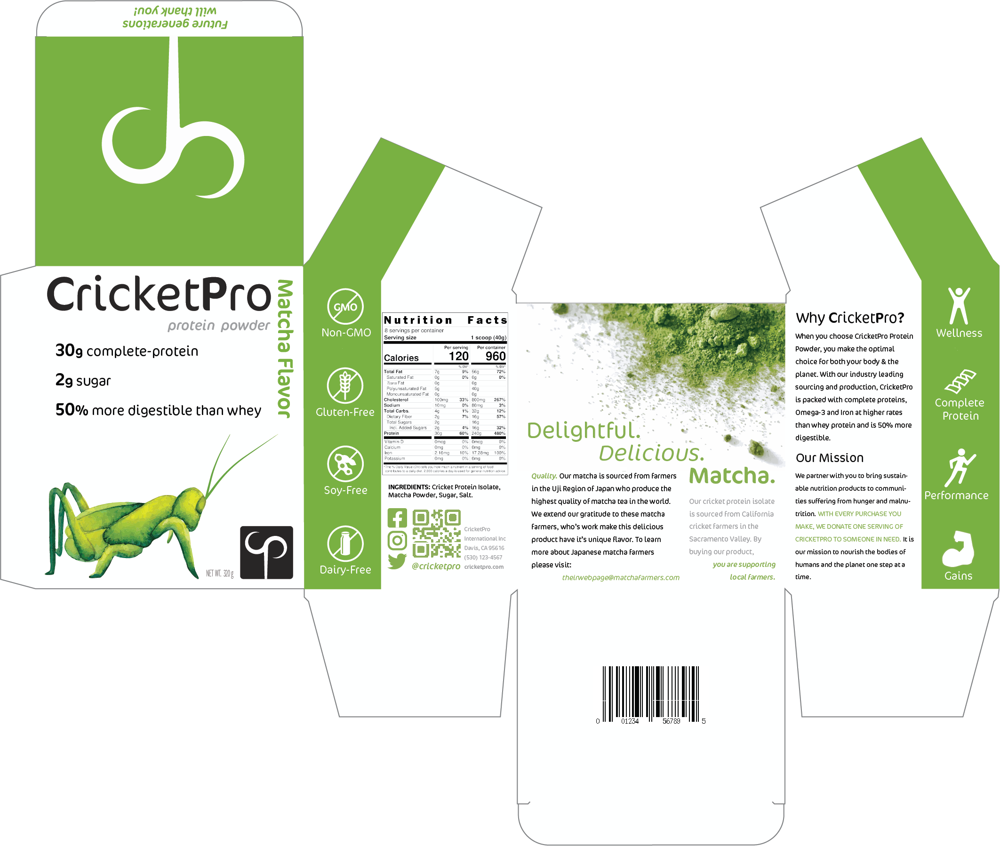
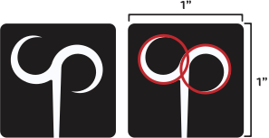
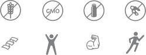

CricketPro Package Design
Creative Brief
Logo
Colors
Icons
Needs
This unique package appeals to the needs of customers who are in search of a complete-protein, sustainable protein powder through effective use of visual hierarchy, color, delight and biomimicry.
Background
The current market for insect-based protein is very niche. It has the potential to be a hot new product as it is very sustainable but poses challenges in relation to western palates that don’t typically include insects in their diet.
Project Objective
The goal is to create a package that will appeal to customers who would not typically think to try insect-based food products and dietary supplements. The avenue towards appealing to hesitant customers will be executed through the construction of a sustainable and delicious product identity.
Marketing Strategy
The marketing strategy will be a marriage of digital and physical promotion. On social media the strategy will be sponsoring lifestyle, health, nutrition, and sustainability influencers and purchasing social media ads. In person promotion will include clothing, branding on delivery vehicles, billboards, and in-store samples.
Message
“Gains for you,
and the planet.”
Audience
People who regularly use protein powder, fitness-enthusiasts, people concerned with sustainability. Younger generations may be more open to trying new things and more eager to make sustainable decisions.